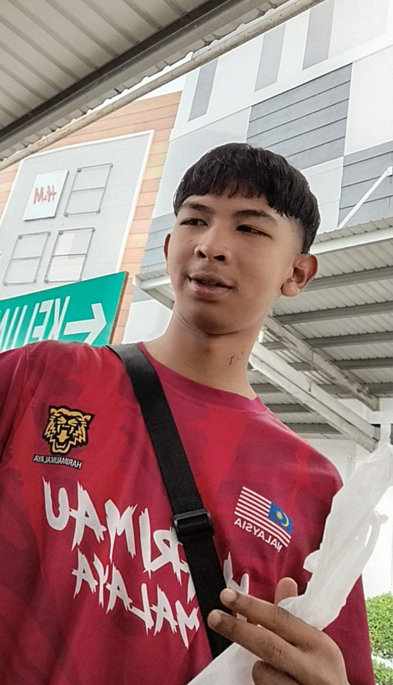
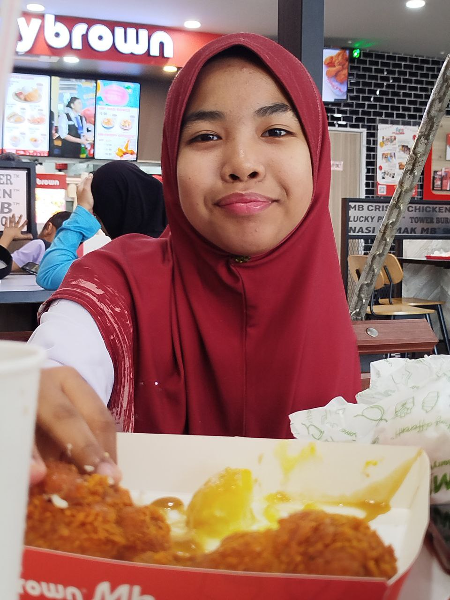

My father is a retired police officer who is firm, determined and very responsible. Although he doesn't say much, he always shows love through actions. He taught me about discipline, courage and the meaning of independence.

My mother is a primary school teacher. She is the most patient and caring person I know. She is always the place where I share stories and feelings. Her caresses, advice and prayers are a strength that never fails for me.
My brother is the eldest child in the family. He is a cool person, a little arrogant on the outside, and doesn't talk much. But behind that, he is very loving, caring and wise. He always cares about us siblings, even if sometimes it is not shown openly. In silence, he protects us and is a good example.
I am the second of four siblings. My family is the most meaningful person in my life. They are not only my home, but also my source of strength, happiness and inspiration in every step of my life 🧡.

My younger brother is very different from me. He is friendly, sociable and has many friends. Despite this, she is very sweet and caring. She always greets me with a bright smile. He is easy to ask for help, and never shy away from helping. Although he likes to tease our little sister, we know that it is his way of showing love.

My little sister is similar to our eldest brother, calm and quiet but with a very noticeable spoiled nature. As the youngest, she is very close to her parents and me. I have always been her confidant, or more accurately, her “mobile bank”. But I calm down, because I know that she also loves me and my family very much.
I don’t have many friends—just a few. But they mean the world to me 💜
Julia has been my friend since primary school. We were always rivals, constantly trying to outdo each other, but in a way that pushed me to become a better version of myself. Beautiful and smart, she was every teacher’s favorite. Although we’re far apart now, we still keep in touch and never let the distance break our bond.
Huda was my sunshine during secondary school. She’s cheerful, full of smiles, and always knew how to lift my spirits. Sensitive but kind hearted, her presence made even the most stressful school days feel lighter.
Auni may seem serious on the outside, but she has a deep understanding of the emotions of those around her. She’s always been fair and thoughtful, and I truly appreciate her steady kindness and emotional support.
Faten, my university friend, is effortlessly beautiful and proudly from Kedah. She’s independent, humble, and funny, a rare combination that makes her such a joy to be around. Her strength and personality are truly inspiring.
Dayana is my closet friend, and also the most affectionate. Her youngest-child energy makes her adorable and comforting to be with. She’s very detailed, loves to cuddle, and takes every task she’s given seriously. She’s not just my best friend, she’s my safe space.
Even though I only have a one pet, it holds a special place in my heart.
Miu is a beautiful white cat who once got lost near my home. I decided to adopt her with love, and since then, she has become one of the most affectionate and gentle companions I’ve ever had. She’s not just cuddly, but also incredibly reliable, brave enough to catch dangerous creatures like snakes. Clean, healthy, and motherly, Miu is now a proud mom of three adorable kittens.